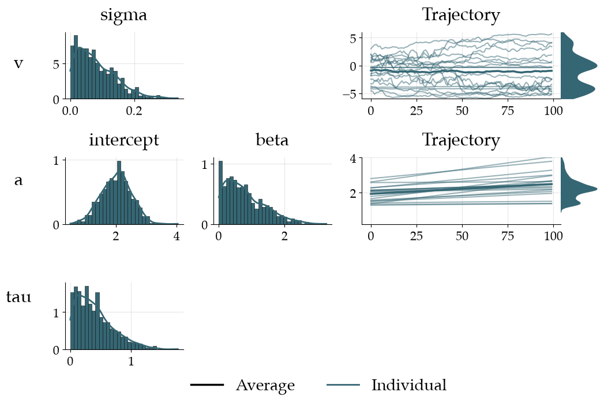
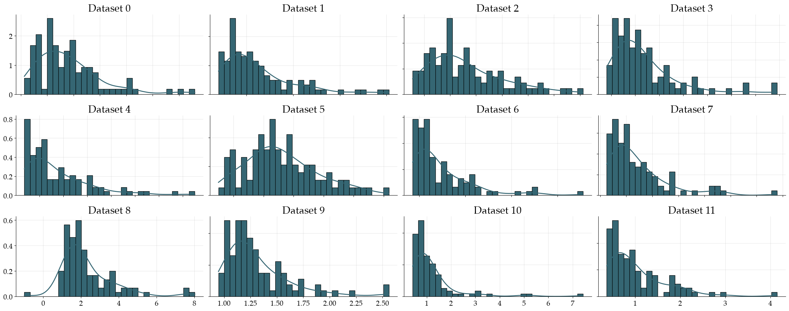
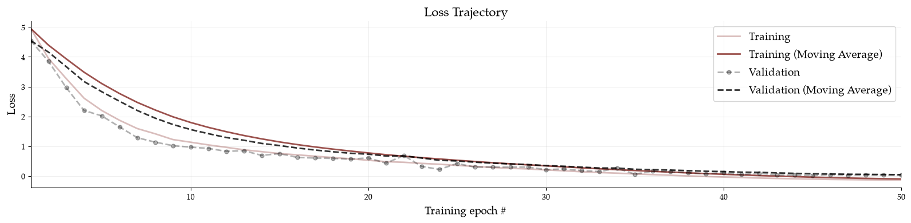
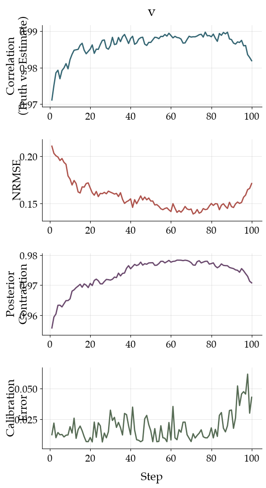
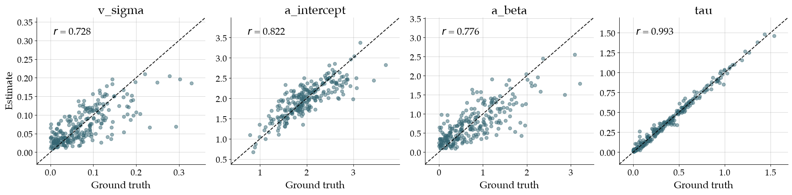
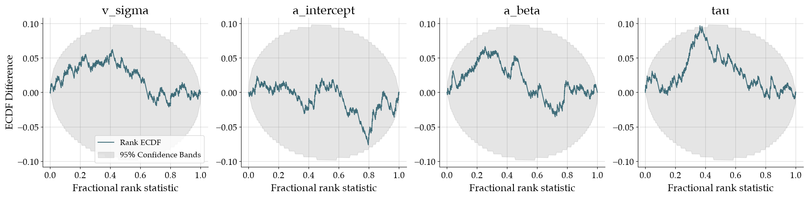
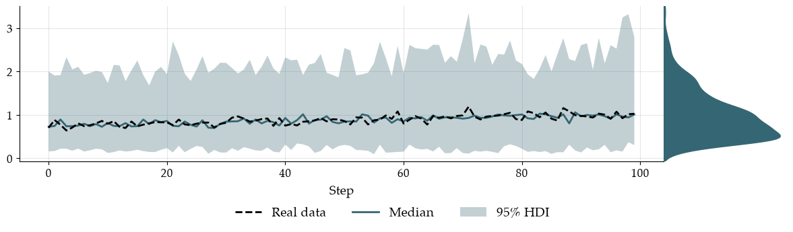
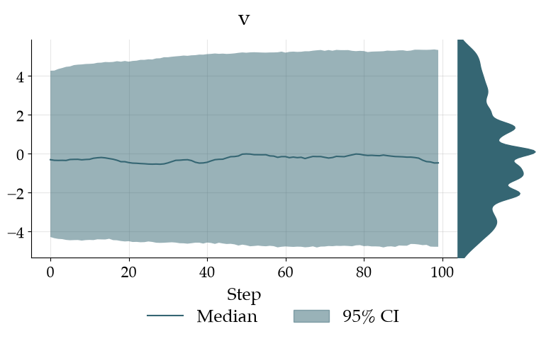
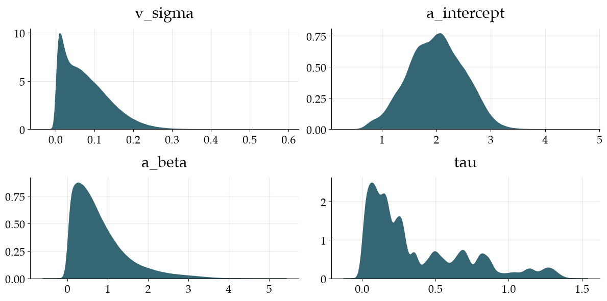

Minimal Workflow Demonstration#
import superstats as sup
import numpy as np
INFO:jax._src.xla_bridge:Unable to initialize backend 'tpu': INTERNAL: Failed to open libtpu.so: dlopen(libtpu.so, 0x0001): tried: 'libtpu.so' (no such file), '/System/Volumes/Preboot/Cryptexes/OSlibtpu.so' (no such file), '/Users/lschumacher/.local/share/uv/python/cpython-3.13.14-macos-aarch64-none/lib/libtpu.so' (no such file), '/usr/lib/libtpu.so' (no such file, not in dyld cache), 'libtpu.so' (no such file)
INFO:bayesflow:Using backend 'jax'
Constants#
# number of observations per dataset
NUM_STEPS = 100
Specify an Observation Model#
In this demonstration, we use the Diffusion Decision Model (DDM), which is already implemented in Superstats. The Diffusion Decision Model (DDM) simulates response time and choice data using:
v (drift rate): speed/direction of evidence accumulation
a (boundary separation): caution — distance between decision thresholds
tau (non-decision time): time for encoding + motor response
bias (starting point): initial bias toward one boundary
obs_model = sup.simulation.sample_ddm
Specify a Joint Prior#
Each model parameter can be specified via the following options:
A
StochasticTransition\(\rightarrow\)local_param(time-varying parameter, estimated) &hyper_param(time-invariant parameter, estimated)A
DeterministicTransition\(\rightarrow\)deterministic_param(time-varying parameter, not estimated) &hyper_param(time-invariant parameter, estimated)A
Prior\(\rightarrow\)shared_param(time-invariant, estimated)A
scalar\(\rightarrow\)fixed_param(time-varying, not estimated)
Here, we use:
v: A Gaussian random walk as a
StochasticTransition, with default hyperpriors forsigma(scale for noise) anddelta(drift)a: A
DeterministicTransitionlinear trend model, with default hyperpriorsslopetau: A halfnormal
Priorleading to an estimated parameter shared across steps (i.e., time-invariant)bias: A fixed
scalarparameter that is both time-invariant and not estimated
For all parameters with a transition we need to specify bounds.
In StochasticTransition, trajectories are generated in an unconstrained space and then transformed via a scaled sigmoid function, so be cautious when specifying initial_prior, as it is specified in the unconstrained space.
In DeterministicTransition, trajectories simply get clipped to ensure staying within bounds.
joint_prior = sup.JointPrior(
v = sup.transition.RandomWalk(bounds=(-6.0, 6.0)),
a = sup.transition.Linear(
bounds=(0.2, 4.0),
intercept=sup.Prior("normal", loc=2.0, scale=0.5)
),
tau = sup.Prior("halfnormal", scale=0.5),
bias = 0.5
)
fig = joint_prior.plot_joint_prior(
num_steps=NUM_STEPS,
num_trajectories=20,
figsize=(10, 6.5)
)

Specify a Generative Model#
Combine the prior and simulator into a model. Additionally, we can specify a missingness process and a contamination process.
Missing-at-random is already implemented (missing="random"). We can even specify a prior on the missing probability so that each dataset has a different missing proportion (though this proportion itself is not estimated).
Similarly, we can specify a contamination process (contamination="random_choice") and, if desired, estimate the probability of contamination.
generative_model = sup.GenerativeModel(
prior=joint_prior,
model=obs_model,
missing=None,
contamination=None
)
Generate 10 prior samples and simulate 10 datasets, each with 100 observations.
sim_data = generative_model.sample(batch_size=10, num_steps=NUM_STEPS)
print(
"Dict keys: ", sim_data.keys(), "\n",
"Shape of response_time: ", sim_data["response_time"].shape, "\n",
"Shape of a time-varying param: ", sim_data["v"].shape, "\n",
"Shape of a time-invariant param: ", sim_data["v_sigma"].shape, "\n",
sep=""
)
Dict keys: dict_keys(['response_time', 'choice', 'time_steps', 'v', 'a', 'v_sigma', 'a_intercept', 'a_beta', 'tau'])
Shape of response_time: (10, 100)
Shape of a time-varying param: (10, 100, 1)
Shape of a time-invariant param: (10, 1)
Generate 12 prior samples and simulate 12 datasets, each with 100 observations.
Plot response times (data_dim=0) as distributions (kind="dist"), with one panel per dataset (aggregation=None).
fig = generative_model.plot_push_forward(
num_sim=12,
num_steps=NUM_STEPS,
data_dim=0,
kind="dist",
aggregation=None,
num_cols=4
)

Set up amortized Bayesian Workflow#
workflow = sup.Workflow(
simulator=generative_model,
checkpoint_filepath="checkpoints/minimal_demo",
summary_network=sup.networks.RecurrentNet(),
inference_network="coupling"
)
Here, users can provide summary and inference networks. Default networks are used if nothing is provided.
Approximator Training#
Choose either offline or online training
Offline Training#
Use offline training for fast iteration of the model develop and verification cicle.
train_data = generative_model.sample(
batch_size=20_000,
num_steps=NUM_STEPS,
tile_to_steps=True
)
val_data = generative_model.sample(
batch_size=100,
num_steps=NUM_STEPS,
tile_to_steps=True
)
history = workflow.fit_offline(
data=train_data,
validation_data=val_data,
epochs=50,
batch_size=32
)
Online Training#
Use online training for final maximal performance.
history = workflow.fit_online(
num_steps=100, epochs=50,
num_batches_per_epoch=1000,
batch_size=32
)
fig = workflow.plot_history(workflow.history)

Model Verification#
Simulate some data for verification
targets = workflow.simulator.sample(
batch_size=250,
num_steps=NUM_STEPS,
)
Fit the model to the simulated data
samples = workflow.sample(
data=targets,
num_samples=300,
batch_size=8
)
Time-varying Parameters#
Plot four diagnostic metrics for the time-varying parameters across time:
Pearson correlation between true parameter and posterior median
Normalized root mean squared error between true parameter and posterior median
Posterior contraction
Simulation-based calibration error
fig = workflow.verify_time_varying(
targets=targets,
estimates=samples
)

Time-invariant Parameters#
Plot recovery and simulation-based calibration for time-invariant parameters
fig_recovery, fig_calibration = workflow.verify_time_invariant(
estimates=samples,
targets=targets,
uncertainty_agg=None
)


Fit Data#
Here we could use real data and just bring it into the same shape as the simulated. However, we just use simulated data here and treat it as if it was real data.
num_subject = 50
data = workflow.simulator.sample(
batch_size=num_subject,
num_steps=NUM_STEPS
)
samples = workflow.sample(
data=data,
num_samples=500
)
Posterior Re-simulation#
resim_data = workflow.resimulate_posterior(
samples,
num_sims=5
)
fig = sup.diagnostics.plot_posterior_resimulation(
pred_data=resim_data,
real_data=data,
aggregation=np.median,
aggregate_strategy="no_epistemic",
)

Posterior Estimates#
Time-varying#
fig = workflow.plot_time_varying_posterior(
estimates=samples,
aggregation=np.median,
num_cols=1
)

Time-invariant#
fig = workflow.plot_time_invariant_posterior(
estimates=samples,
aggregation=np.median
)
